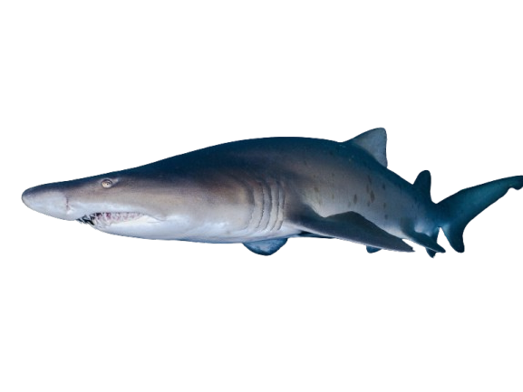

Tiburón Toro

| índice: |
| -Descripción |
| -Reproducción |
| -Alimentación |
| -Comportamiento |
| -Distribución y Hábitat |
| -Características de su mordida |
| -Tiburón Toro mini documental |
Descripción
Carcharias taurus, también conocido como tiburón toro, enfermera gris , tiburón de leznas tiburón tigre de arena, tiburón damisela, tiburón de dientes serrados o escalandrún (en Argentina), es una especie de tiburón elasmobranquio lamniforme de la familia Odontaspididae.No debe ser confundido con la especie conocida en inglés como "Bull Shark" -Carcharhinus leucas-, que en español es conocida como tiburón sarda, que pertenece a otro orden, es decir, no tiene un parentesco cercano.
Tiene un cuerpo macizo con dos grandes aletas dorsales, y una cola alargada con un largo lóbulo superior y un pico precaudal. Llegan a medir hasta 3,2 m de largo y pesar hasta 159 kg. El promedio de los machos es de 2,1 m y el de las hembras 2,2 m.Tienen un fondo gris y blanco abajo. En agosto de 2007, se fotografió un espécimen albino en South West Rocks, Australia.
Reproducción
Los machos suelen copular con más de una hembra. La gestación dura entre 9 y 12 meses y el tipo de reproducción es ovovivípara, es decir, las crías se desarrollarán hasta el momento del nacimiento dentro del útero de la madre. Aunque se fertilicen varios óvulos y se formen diversos embriones, generalmente solo dos culminaran el proceso, ya que, los más grandes una vez que eclosionen del huevo, se comerán a los demás. Este fenómeno ocurre porque una cría a los 5 cm ya ha desarrollado mandíbulas y dientes, lo que facilita el canibalismo intrauterino en la especie. Esto, además, facilita que la descendencia nazca bien desarrollada y capaz de ser independiente desde este momento.
Al nacer, los tiburones toro bebés suelen medir más de un metro. Los machos maduran cuando casi alcanzan los 2 m de longitud o entre los 4-5 años, mientras que las hembras lo hacen sobre los 2 m o 6 años. La esperanza de vida en cautiverio se encuentra entre los 13 y 16 años, pero se estima que en su hábitat natural logran alcanzar los 35 años.
Alimentación
Es un pez carnívoro que se alimenta de una gran variedad de animales pertenecientes a la fauna marina, entre los que podemos mencionar: diferentes tipos de peces óseos, otros tiburones de menor tamaño, cangrejos, langostas, rayas, calamares y moluscos.
Aunque puede cazar de forma solitaria, cuando está con otros tiburones toro lo hace en grupo, lo que aumenta el éxito de las capturas, ya que cooperan entre sí en estos momentos. Al identificar cardúmenes de peces o agrupamientos de otros animales que incluye en su dieta, se abalanza sobre estos de una forma frenética, capturando todo lo que le sea posible. Descubre más detalles cómo cazan los tiburones en este otro artículo.
Comportamiento
Este tiburón acostumbra a movilizarse solo, pero también lo puede hacer en grupos, lo que sin duda asegura el apareamiento, facilita la caza y aumenta tanto la protección como la supervivencia. Las poblaciones que se ubican hacia el norte o sur suelen migrar de manera estacional hacia aguas más cálidas. Según algunos registros, los procesos migratorios los realizan por grupos divididos en función al tamaño y sexo.Son más activos durante la noche, en el día por lo general están flotando en las columnas de agua sobre fondos arenosos, en cuevas o arrecifes de coral. Para lograr la flotabilidad, retienen aire en sus estómagos, lo que les permite mantenerse tranquilos sin moverse. La observación recurrente de la especie en áreas específicas ha permitido suponer que presenta apego por ciertos lugares en particular.
El tiburón toro no es de naturaleza agresiva hacia las personas, sin embargo, siempre se recomienda no acercarse o introducirse en sus zonas de distribución porque podría sentirse amenazado y su tamaño, junto a su fuerte mordida, lo hacen ser una especie que puede causar daños importantes.
Distribución
Habita en aguas tropicales y subtropicales de los océanos Atlántico, Pacífico e Índico. Se encuentra a lo largo de las costas de América, África, el sudeste asiático y el norte de Australia, destacándose por adentrarse en grandes sistemas fluviales como los ríos Amazonas, Misisipi y Zambeze.
Hábitat
A diferencia de la mayoría de los tiburones, puede sobrevivir tanto en agua salada como en agua dulce. Prefiere zonas costeras poco profundas de menos de 30 metros, como bahías turbias, estuarios, manglares y desembocaduras de ríos, los cuales también sirven como áreas de crianza para los ejemplares jóvenes.
Distribución y Hábitat
Este tiburon se puede encontrar en el Atlántico, Pacífico e índico, y también en los mares Mediterráneo y Adriático. En el océano Atlántico occidental, se encuentra en aguas costeras alrededor del golfo de Maine hasta Florida, en el norte del Golfo de México alrededor de las Bahamas y las Bermudas, y en el sur desde Brasil hasta Argentina, ha sido avistado en Rio Amazonas . También se encuentra en el océano Atlántico oriental, desde el mar Mediterráneo hasta las Islas Canarias, en las islas de Cabo Verde, a lo largo de las costas de Senegal y Ghana, y desde el sur de Nigeria a Camerún. En el Océano índico occidental, el tiburón va desde Sudáfrica hasta el sur de Mozambique, pero con exclusión de Madagascar. El tiburón toro también ha sido visto en el Mar Rojo y puede ser encontrado tan al este como las costas de India. En el Pacífico occidental, ha sido avistado en las aguas alrededor de las costas de Japón, China y Australia.
Características de su mordida
 |
Cuenta con una mandíbula extremadamente fuerte y afilados dientes que le ayudan a cazar y a desmenuzar a sus presas para alimentarse.Su mandíbula mide hasta 245 centímetros.Su dentadura es una de las más fuertes del mundo y sus dientes están entre los más filosos. |
Tiburón Toro mini documental
Minuto 1:46